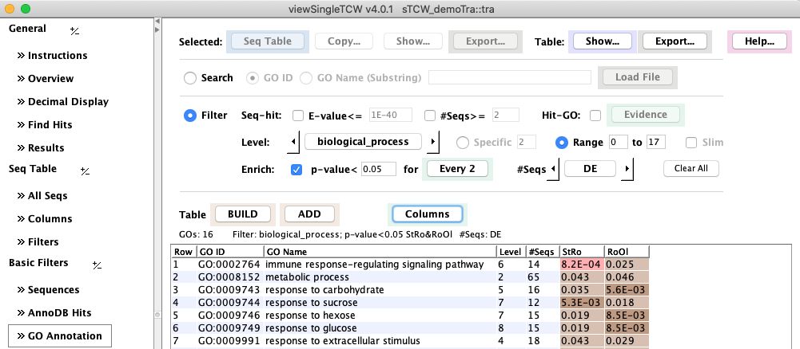
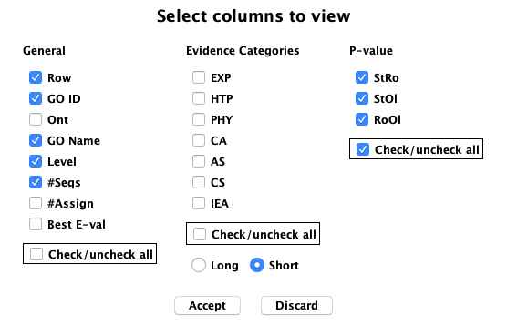
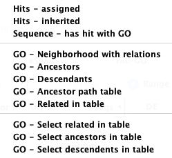
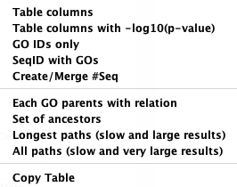

|
viewSingleTCW - View and Query Single Species
GO Annotations Filters
The contents of this panel will depend on how the database was built with runSingleTCW:
- This panel will exist only if UniProt databases were used in annotation.
- The Slim option will exist only if a GO_slim set was selected when the database was built with runSingleTCW.
- The Enrich: row of options will exist only if GOseq
has been been run (see runDE).
GO Terms may be assigned to a hit ID, or it may inherit a hit ID;
see GO Help for explanation.
See All GO Views for TCW views of GO relations.
In following image shows the enriched GOs for Ro (Root) compared to Stem (St) and Old leaf (Ol)
at a p-value of 0.05.
The #Seqs are the counts of DE (p-value<0.05) sequences for the respective GO.

The decimal number display can be changed with Decimal Display
(the above display uses color scheme #1 for the p-values).
| The 27 evidence codes are groups into 6 >Evidence categories, which
are defined on the Evidence Information option of the Help....
They can be filtered on by setting them in the Evidence panel.
|

|
|
Show... has multiple options as shown on the right. Below are some examples.
The Export...
has the exact same option, where the results will be written to file, with a choice
of All info or IDs only.
|

|
Table... has multiple options as shown on the right.
|

|
| 

{kind=link}
{kind=link}
{kind=link}
{kind=link}
{kind=link}
{kind=link}
{kind=link}
{kind=link}